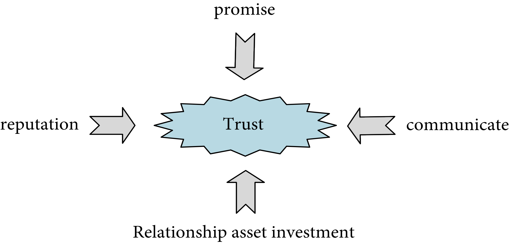
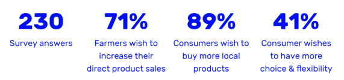
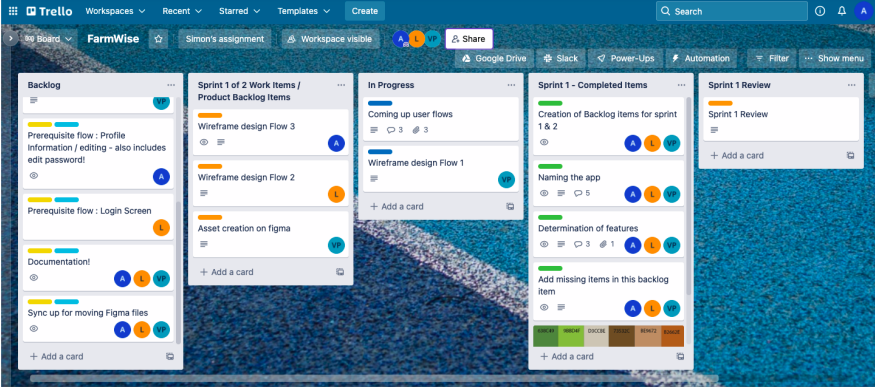
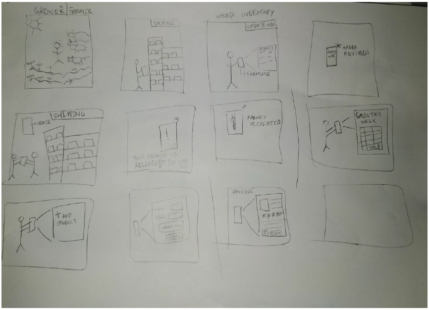
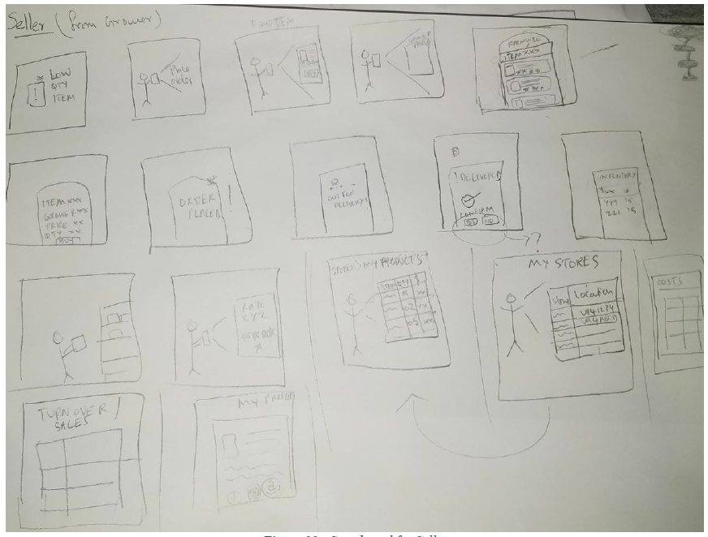
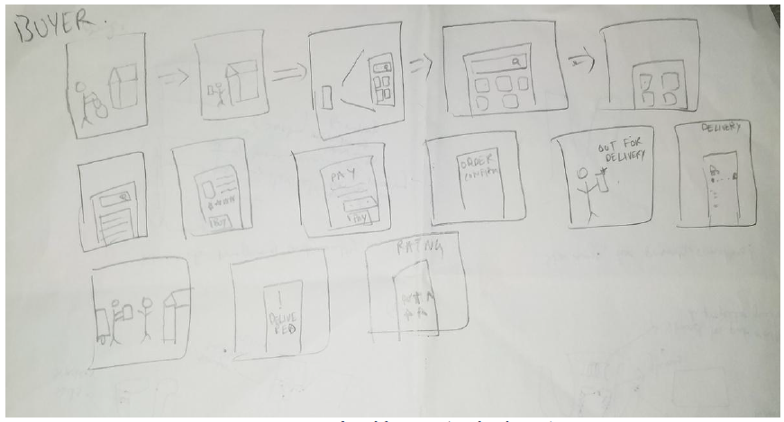
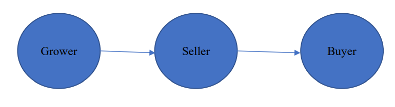
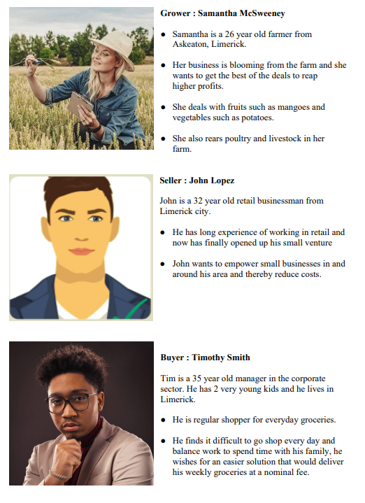

FarmWise
The FarmWise is a project that has been modelled keeping in mind the strong pillars of sustainability, reliability and transformation – that is, an application aimed to provide sustainability in the way the business is carried out, reliability of the platform being used to carry it out and transforming small businesses digitally eventually impacting lives at different points in the supply chain. Please find the detailed case study here :
- Background Research
- Design and Development plan - First Iteration
- Story Boarding
- Service Design
- User Personas
- Initial and final Design Prototypes
- Usability Analysis with respect to 10 Heuristics provided by Nielsen Norman Group
Motivation and Background Research
Having worked on multiple web and mobile applications spanning the agriculture sector, I saw a great opportunity to learn and explore this area in terms of digital transformation. Few of these applications and points of information that we looked into are :
“ The Export Services Portal is a central source of information to better equip Western Australian agrifood and fisheries exporters to develop their business. It’s a comprehensive and easy tool to identify the key export related services provided by government (State and Commonwealth) departments and industry bodies to Western Australian agrifood and fisheries exporters. ” (Agrifood and Fisheries Export Services Portal at https://export.agric.wa.gov.au/)
The solution is offered by the Government of Western Australia, with insights into the offering of this web portal that connects small industries in the agriculture sector by providing information for developing various businesses.
This application has a great role to play in the conceptualisation of “FarmWise” as this portal aims at providing services and facilitating the business flow between Growers and Sellers. This idea became the seed for our application and we let it evolve and grow by defining functionalities and user flows. “connects fresh produce growers, merchants and buyers – online.
Phoenicia provides unprecedented visibility and transparency across the fresh produce value chain. With access to real time market data and the ability to manage your business when and where you choose, Phoenicia will save you time, strengthen your relationships, make you better informed and improve your decision making. It is the new way of doing business.” (Phoenicia at https://phoenicia.com.au/ )
GAR is committed to be the leader in sustainable palm oil production by adopting best industry practices and standards, managing the environment responsibly, creating employment and empowering the communities.” (Sinarmas at https://www.sinarmas.com/en/agribusiness-and-food.html )
“Teagasc – the Agriculture and Food Development Authority – is the national body providing integrated research, advisory and training services to the agriculture and food industry and rural communities.” ( Teagasc at https://www.teagasc.ie/about/) Teagasc provides Farm Advisory services being a Agriculture and Food Development authority of Ireland.
The motivation of working on FarmWise piqued due to my inclination into this sector by the virtue of exposure into development of similar projects such as the Agrifood and Fisheries Export Services Portal and Phoenicia and I was able to leverage it to steer the team to think in the direction of the solution through the design of FarmWise.
FarmWise: How it came to be?The name FarmWise resulted as a group conversation when the discussion was initiated around the concept of connecting a local producer to the end customer. It piqued curiosity when we started discussing how "wise” it would be if the producer knew how much to grow based on the demand for the produce from their “farm” and hence the name came to being for this application as “FarmWise”.
Background Research
As pointed out in the introduction section, the various products and resources that we explored are as :
- Agrifood and Fisheries Export Services Portal
- Phoenicia
- Sinarmas (Golden Agri-Resources Ltd.)
- Teagasc
For the motivation and research purposes, some of the online sources for data points from an inductive research point of view were explored and can be found as under:
Supply Chain Governance of Agricultural Products under Big Data Platform Based on Blockchain Technology
“The present work serves to improve the stable cooperation relationship among subjects of supply chain such as enterprises, farmers, intermediary organizations, and retailers and enhance the governance and optimization of agricultural product supply chain, thus strengthening the competitiveness of China’s agricultural industry. The supply chain governance of agricultural products is taken as the research object.” ( Guo W. and Yao K, 2022)
How to Design an App to Support Local Farmers — Grow It, a UX Case Study (source uxdesign.cc)
The author, Antoine Fourrier , conducted a survey with 230 answers regarding the opportunity to access a digital platform to support local growers and the above are the results of the survey. It provided us with a good motivation to proceed with the design process. 
Having the conceptual model of Phoenicia in mind, we explored the website of the same and drew out the features to adapt some of the core offerings into our application and we completed an end to end flow of our application with buyer, seller and grower.
Design and Development Process
The design and development process was carried out in a structured manner.
The Agile Sprint Methodology
The Design and development phases started on February 26th 2022, the process started in an
Agile sprint methodology fashion.
Trello board was leveraged to facilitate this process.

The platform was leveraged to track our progress, brainstorm ideas, create tasks and
assign it
to different team members.
Various tasks that were recognised are as under :
- Colour palette identification
- Asset creation
- Storyboards to come up with brainstorming scenarios
- User Personas
- User flow identification
- Feature mapping
- Initial wireframe design
- Final Prototype design
- Integration of work
As a peer group, the work was evenly distributed with the intention to help each other out as and when possible.
Storyboarding
The Storyboarding method was used for ideation and narrowing down of the features some of the storyboards can be found as under :   
The Service Design
The service design is to support and foster the ecosystem where the grower grows the local produce and the seller buys it from the grower and stocks it in their inventory.
The buyer that is the end customer would in turn go to the seller to buy the product. This empowers the economy as they source locally and hence enables the seller to facilitate the sale of a diverse range of produce that is sourced from the local grower and sell it to the buyer who has the option to buy a whole range of products from the seller instead of just one from a grower.
The Seller has the ability to source produce from multiple growers. This proposed model would thereby serve the economy by making it reliable, sustainable with a lesser carbon footprint as the produce is not shipped from another far-away location and would help transform and foster small businesses.
Personas
We created 3 varying profiles to empathise with the users with different personas for grower, seller and buyer.
Figma Design phase
After narrowing down the features and user flows, the visual designing phase was executed on figma.
I executed the primary task of Grower’s user story and aligned with the storyboard and the features that were discussed by the team.
The collaboration was well executed. The team members were able to help each other out for the effective output in the respective flows that has a vast number of screens.
Final Prototype on Figma
Prototype of FarmWise App

Teamwork
The most enjoyable part of the experience was working with the team, though all the members had tight deadlines across the course. Discussions were often facilitated and ideas were opened up to enhance the scope of work, we were able to exchange critical feedback and improve our designs and ability to work in our team by the means of sprint review and retrospective. Following Agile sprint framework also enabled us to manage work in an efficient way.
Conclusion
There are several aspects to designing an application. Various points that need to be kept in mind right from researching the topic, to brainstorming the idea, to checking compliance with the Neilsen Norman group’s heuristics, making storyboards, drawing personas, lets us empathise with the end user which is a very important aspect for application design.
Leveraging the design quality of everyday things, such as the Affordances, Mapping, Constraints and feedback and incorporating them in the design are indeed a great learning opportunity through practice.
Above all, learning to effectively collaborate with the team is another crucial aspect.
The application FarmWise is incubated under the above mentioned environment and is designed to suit the end users achieve their objective and establish a sustainable and reliable supply chain in food logistics that would transform businesses and empower local communities and businesses.
References, Webography & Bibliography
- Wei Guo, Kai Yao, "Supply Chain Governance of Agricultural Products under Big Data Platform Based on Blockchain Technology", Scientific Programming, vol. 2022, Article ID 4456150, 16 pages, 2022. https://doi.org/10.1155/2022/4456150
- https://export.agric.wa.gov.au/
- https://phoenicia.com.au/
- https://phoenicia.com.au/
- https://www.teagasc.ie/about/
- https://www.nngroup.com/articles/ten-usability-heuristics
- https://uxdesign.cc/grow-it-how-to-design-an-app-to-support-local-farmers-a-ux-casestudy-cad4e7302039
- https://www.hindawi.com/journals/sp/2022/4456150/fig17